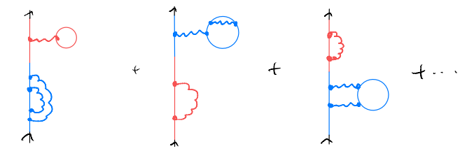

lec18
Contents
lec18¶
Note
This is NOT the official course PHYS5340 website yet!
If you are student in this course, always take the lecture notes as the correct one if you find any differences between lecture notes and website contents
If you are just passerby, use the materials below at your own risk. Since the website is still the first version (even alpha version), there could be some typos, incorrect/inaccurate/improper statements.
Note
All materials in this website are based on the course offered at HKUST
Note
As a “casual course”, we provide only general references but not specific ones to the materials introduced
Note
All materials’ copyright in this website are reserved for the course lecturer
If you want to use the material somewhere, you might need to contact the lecturer first
Note
Contribution is always welcome. if you find any typo, incorrect/inaccurate/improper statements or necessary references, do not hesitate to
raise an issue on github repo
make an pull request on github repo
contact me directly
20220407
Topics
Frequency space Feynman diagrams
Self-energy
Jellium Hamiltonian
Goals
Getting familiarized with how to translate Feynman diagrams to expressions / integrals in the frequency-momentum space
Appreciating how the interaction correction to the propagator can be grouped into one single quantity, the self-energy
Going to frequency space¶
So far, we have used a “hybrid” discussion with momentum and real time. We have seen that momentum is conserved at each vertex, e.g.,
which is a consequence of the translation invariance of the full interacting Hamiltonian.
It will be natural to ask if a similar conservation holds for frequency (energy). We expect the answer to be yes, since we are considering a time-independent Hamiltonian. Let us just go through an example in some details to see how that comes about, which hopefully also helps us build up our technical muscle in translating diagrams into expressions.
Recall, the Fourier transform for the (bare) propagator is
Consider a slightly more complicated diagram in \(G^F(k,\omega)\)
The contraction imposes delta-functions in the momenta, and it will be convenient to first consider the effects of that
i.e., there are only two independent internal momenta. In fact, it will be convenient (and more conventional) to label the diagram using these two momenta
This corresponds to the expression (suppressing spin)
Let’s focus on the phases
i.e., there are only two independent internal frequencies, which we may choose to parameterize as
Of course, it would have been much easier to label the frequency in the original diagram, simply by imposing a “frequency (i.e., energy) conservation at every vertex”:
(Note: the wavy lines do not actually depend on the frequency we attached to them, since we considered instantaneous interactions)
Now it should be clearer how to translate the diagram into an expression: we first label all the lines with momentum and frequencies (i.e., 4-momentum in the relativistic case), with the understanding that any internal variables are integrated / summed over. Then each fermion line corresponds to a bare fermion propagator \(G_0^F(k,\omega)\), whereas each wavy line corresponds to an interaction term \(V(q)\).
The remaining question, important for actual calculations, concerns the prefactor which we did not keep track of (deliberately). It is affected by
factors of \(-i\): this can be absorbed into the “dictionary”
fermionic sign and spin degeneracy: each fermion loop contributes a factor of \(-(2S+1)\)
“symmetry factor”: generally speaking, different contraction patterns can lead to the same diagram up to relabeling, and this cancels (partly) the combinatorial factors appearing in the expansion of the exponential. However, high-symmetry diagrams generally appear a fewer number of times than a “generic” diagram, since some “relabelings” collide. This gives a symmetry factor for the diagram.
At this stage, almost every field-theory textbook contains a box (or two) called “the Feynman rules”. Let us not repeat them here beyond the sketch above. Instead, see, e.g., Coleman 7.2.
Dyson’s equation and self-energy¶
Clearly, it was very tedious to keep track of all these factors. It makes sense for us to abstract the expression a bit by writing / drawing
Furthermore, we have only considered one particular term in the perturbative expansion among the many. One can imagine having arbitrarily complicated diagrams. It will be natural to group all these possibilities into some general blob. That brings us to the notion of Dyson’s equation and self-energy.
Our general goal will, again, be ensuring that redundant pieces in the perturbative analysis can be simplified as much as possible. To appreciate how, let us consider expanding the full propagator in terms of the connected diagrams:
We see that the higher-order terms are basically built around the basic first-order terms taking the form
Of course, “built” is a vague word to use here. To be more precise, we see that the last two terms are special, in that they are the only ones (among the ones drawn) for which three out of the five bare propagators are at momentum \(k\). Indeed, let us translate one of them into explicit expressions
These kind of terms exist at all orders. E.g., keeping the same form of \(G_{0}^{F}\left( k,\omega \right) \blacksquare G_{0}^{F}\left( k,\omega \right) \blacksquare G_{0}^{F}\left( k,\omega \right)\) but at order \(V^3\):

Notice how the blue parts correspond to the “non-simple” terms in our \(O(V^2)\) discussion. And, Also at order \(V^3\), we can have terms of the form \(G_{0}^{F}\left( k,\omega \right) \blacksquare G_{0}^{F}\left( k,\omega \right) \blacksquare G_{0}^{F}\left( k,\omega \right) \blacksquare G_{0}^{F}\left( k,\omega \right) \)
Hopefully we have grasped the pattern emerging: the expansion of the full propagator in terms of the connected diagrams can be rewritten schematically as
From this, we see that we can further restrict our attention to some special classes of diagrams: instead of considering all connected diagrams, it suffices to consider those diagrams which have the following property: it stays connected even if we cut one “internal” fermion line open. We call them “one-particle irreducible”, abbreviated as 1PI.
As promised, we arrive at yet another great simplification of the (formal) analysis by introducing \(\Sigma\). Translating the diagrams back to equations (suppressing the frequency-momentum dependence)
As written, it is suggestive that we are simply summing over a geometric series. Indeed, using essentially the same old trick, we see that the expansion above can be drawn / written succinctly as
where in the last line, we reinstate the \((k,\omega)\) dependence.
To summarize, although we claimed it would be a hard task to compute the “full propagator” in an interacting problem, we can actually condense the entire calculation to that of computing the self-energy \(\Sigma(k,\omega)\). Contrast this with the naive approach, in which we expand the numerator and denominator separately, order-by-order!
Jellium, or, homogeneous electron gas¶
Having built the machinery needed to tackle interacting quantum many-body problems (perturbatively), let us go back to our motivating example: electrons in free space interacting with each other through Coulomb interaction.
Instead of just having the electrons all by themselves at zero temperature, however, we know that, in practice, almost all “low temperature” systems are electrically neutral. Otherwise, the Coulomb energy diverges as we inter-particle spacing approaches zero. As such, let us instead imagine a homogenous system in which we have a uniform background charge distribution which cancels exactly the charge of the charge of the electron.
The modified interaction is now (passing to a continuum description)
where the electron density is